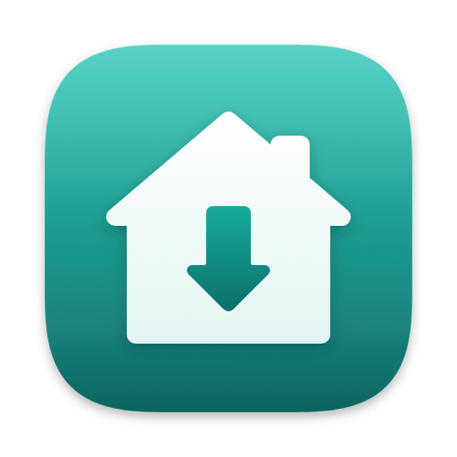

Расписание
Как вам удобно, без cron в голове
Вручную, каждый час, день или неделю. Если хочется точнее, есть своё cron-выражение.
ВручнуюКаждый часКаждый день в 03:00По понедельникам
15 */6 * * *
Бекапы серверов для macOS
CopyHome по SSH снимает дампы MySQL и архивы каталогов, скачивает их на Mac, проверяет каждый файл и кладёт копию в облако. Тихо, по расписанию, из строки меню.
Всё про проект на одном экране
Статус последнего запуска, следующий бекап, сколько места занято и как растёт база. Если что-то пошло не так, CopyHome скажет об этом простыми словами.
Расписание
Вручную, каждый час, день или неделю. Если хочется точнее, есть своё cron-выражение.
15 */6 * * *
Проверка
-- Dump completedконечный маркер tarне упал больше чем на 30%Уведомления
Строка меню
Закрыли окно, а расписание продолжает работать. Стартует при входе в систему.
Ротация
Старые снимки удаляются сами, на Mac и в облаке отдельно.
И локально
Проект «На этом компьютере» снимает дамп без SSH. Клиент MySQL найдётся сам в Homebrew или MAMP.
127.0.0.1:3307
Параметры дампа
CopyHome сам выберет самое быстрое сжатие на сервере. Логи и сессии можно забирать только структурой.
Как устроено
Хост и пользователь, вход по ключу или паролю. Работают ваши ~/.ssh/config и ssh-agent. Кнопка «Проверить SSH» покажет, есть ли на сервере всё нужное.
Базы MySQL и каталоги с исключениями вроде cache/ или node_modules. Каждый источник можно забекапить отдельно.
Сколько копий хранить и нужна ли копия в облаке. Дальше CopyHome всё делает сам и пишет, если что-то не так.
Дамп идёт потоком прямо в файл на Mac и не ложится на диск сервера. Логин и пароль MySQL передаются через stdin, поэтому их не видно в ps.
Копия в облаке
Правило «3-2-1» без ручной работы. После каждого бекапа CopyHome выгружает снимок в ваше хранилище и сверяет контрольные суммы.
Диск / CopyHome/ └─ Магазин/ └─ 2026-10-17T03-00-00/ ├─ mysql-shop.sql.zst ├─ dir-uploads.tar.gz.part001 ├─ dir-uploads.tar.gz.part002 └─ .copyhome.json ✓ sha256
Безопасность
Пароли MySQL, SSH и токены облаков шифруются ключом из связки ключей. В открытом виде они не лежат нигде.
Никаких своих реализаций протокола. Ваши ключи, конфиг и агент. Смена ключа хоста блокирует подключение.
Пароль базы уходит на сервер через stdin, а не в аргументах команды, поэтому соседи по серверу его не увидят.
Вход в облако через страницу Яндекса. Секрет приложения не нужен и не хранится в коде.
Вопросы
Нет. Нужны только bash, gzip, tar и mysqldump, которые почти всегда уже есть. Если пароль базы не задан, CopyHome возьмёт его из ~/.my.cnf на сервере.
В ~/Backups/fast-backup/<Проект>/<дата-время>/: обычные .sql.gz, .sql.zst и .tar.gz, которые открываются без CopyHome. Никаких закрытых форматов.
CopyHome остаётся в строке меню и продолжает работать по расписанию. Можно включить запуск при входе в систему, тогда окно даже не откроется.
Дамп снимается с --single-transaction и не блокирует таблицы InnoDB, а сжатие zstd или pigz работает на всех ядрах сервера. Большие таблицы логов можно забирать только структурой.
Пока нет. PostgreSQL следующий в планах, вместе с инкрементальными бекапами каталогов через rsync и восстановлением в один клик.

Приложение для macOS. Ваши бекапы хранятся у вас.